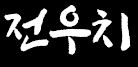

여우의 인격을 지니게 된 전우치의 치유와 복수 드라마
고전소설 <전우치전>과 영화 <전우치>
고전소설 : 전우치전
기존활용사례 : 영화 '전우치'를 중심으로
넷플릭스 5부작 드라마, 전우치
시놉시스 및 기획의도
고전차용요소
등장인물
회차정보
고전문학과 디지털 인문학 3조(김세현, 조은별, Li Tiezheng)의 기말 과제 사이트입니다. 고전소설 <전우치전>을 재해석한 넷플릭스 드라마 <전우치> 소개 자료입니다.
역할분담
자료조사, 위키 밒 html 제작
김세현
자료조사 및 발표, 시놉시스 작성
조은별
자료조사
Li Tiezheng